This is an industry-sponsored project with EUPA, focused on improving the efficiency of personal blenders in quickly processing ingredients into a smooth texture for the best drinking experience.
"We adopted the Lean Product Development process to deliver high-quality outcomes with minimal cost."
2024/9 - 2025/2
RoleResearch, Vision prototyping
Team1 designer, 1 engineer
SupervisionProf. YU - HSIU, HUNG
context
Smoothies — Nutrition for a Fast-Paced Generation
For efficiency-driven Millennials and Gen Z, smoothies have become a go-to choice for daily nutrition. However, most personal blenders still fail to deliver a smooth, refined texture, revealing a clear gap between product performance and user expectations.
market research
Market Positioning: We position the product in the premium segment, the most commercially promising price tier in terms of monthly revenue. Its capability to process high-hardness ingredients supports a broader range of recipes and enhanced nutritional diversity.
source:
Monthly sales share
Share by price tier (units)
Monthly sales revenue share
Share by price tier (revenue)
High-priced sales share
Top models within USD 60–120
We used browser plugins to analyze sales performance and review trends across different price ranges on
Amazon as a basis for market analysis.
Key Insight
High-priced products with higher added value and low-priced products with differentiated design show
greater market potential compared to mid-priced options.
Although high-priced and low-priced products have similar monthly sales volume, high-priced products
generate significantly higher monthly revenue.
High-priced products can effectively process a wider variety of ingredients, such as frozen fruits
and ice cubes, providing greater nutritional value to consumers.
customer analysis
Through negative review analysis, we identified three major pain points customers care most about...
High-priced negative review analysis
Nutribullet Pro 1200Ninja ProNutribullet NB9Beast BlenderNutribullet NB50500Nutribullet Flip
contextual inquiry
Through on-site observation of user operations, we identified five critical events..
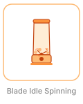
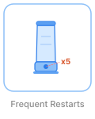
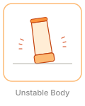
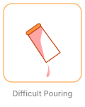
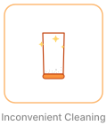
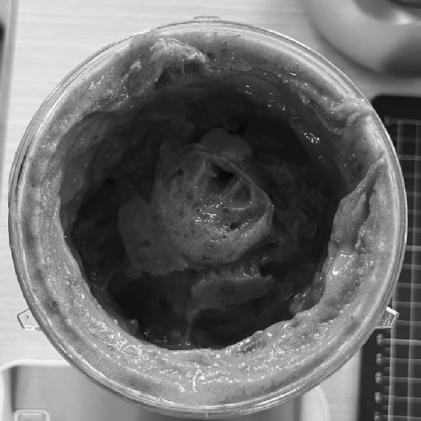
Stage 1
The blender cannot process the frozen fruits at the bottom.
The blades spin without engaging ingredients, creating uneven mixing.
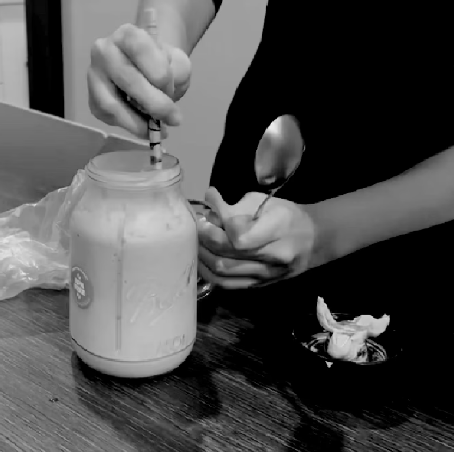
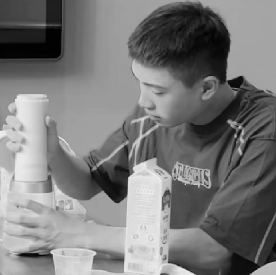
Stage 2
Spoon is needed to assist with blending.
It requires multiple presses of the start button to complete the blending.
It is difficult to determine whether the blending is even.
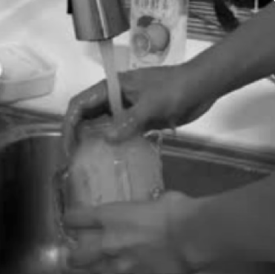
Stage 3
The cup’s small opening and deep bottom make it hard to clean.
Observed the usage process of three users from our target audience and recorded key events to better
understand their true needs.
JTBD survey
Transformed online analysis and on-site investigation into an online JTBD survey,receiving 67 responses.
IPA analysis
Use the quantified scores from the JTBD survey to uncover the true market needs and formulate a product development strategy that caters to those needs.
IPA OPP scores and survey items
Code
OPP
Item
a
12.50
The blades maintain continuous contact with the fruits and ice during blending.
b
10.36
Low noise during blending.
c
10.36
Blender being stable (not vibrating or moving) during blending.
d
10.00
Don’t need external force (shaking or stirring) to assist in mixing during blending.
e
10.00
Able to see the condition inside the cup during blending (to see whether it is completely mixed).
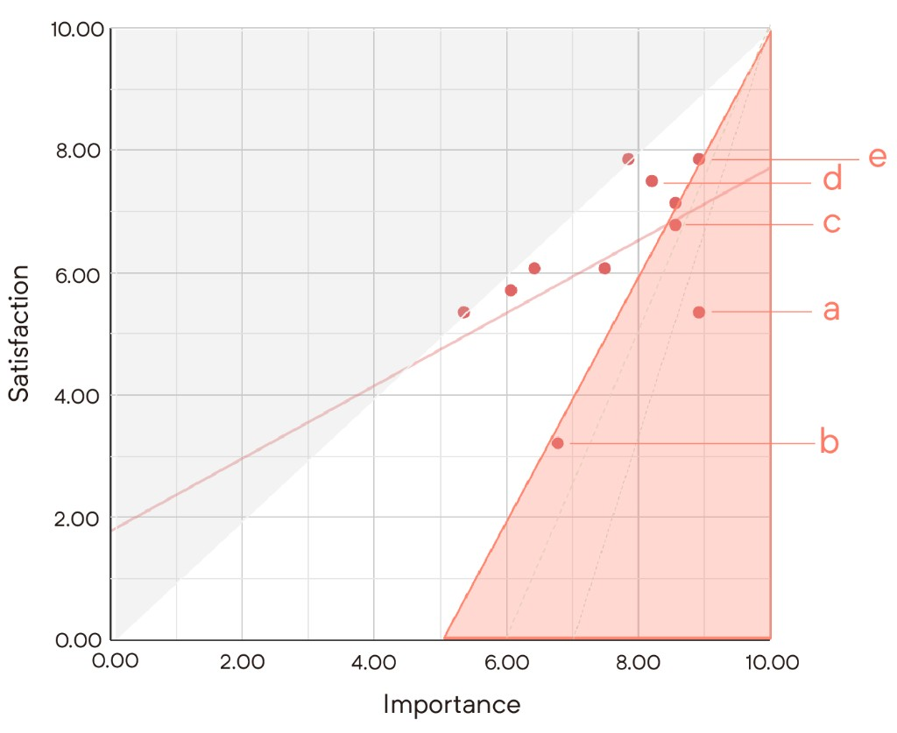
product development strategy
We develop product development strategies based on “Customer Negative Review Analysis” and
“IPA Analysis”.
Product development strategies aligned with customer negative review analysis and IPA analysis
Customer negative review analysis
IPA analysis
product development strategy
✓
Quickly blend the ingredients into a smooth texture.
✓
✓
Reduce the chance of cavitation
✓
✓
Reduce noise during blending.
our goal
Quickly blend the ingredients into a smooth texture | Reduce the chance of cavitation
design & experiment
We tests and made improvements to the baffle, cup shape, and blade base.
For each experiment, we blended almonds and water for 40 seconds, choosing almonds for their hardness
and the ease of distinguishing both particle size and count. We then performed particle size analysis using
specialized software. We used this data to make improvements to the baffle, cup shape, and blade base.
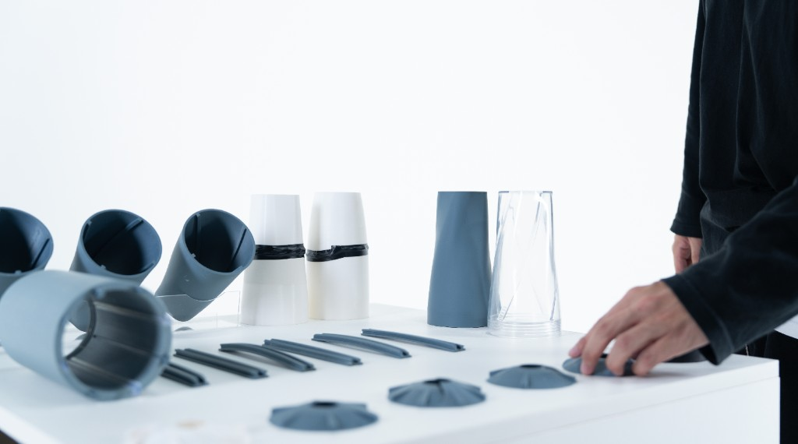
causal relationship map
Map how key factors influence blending outcomes to guide the next design decisions.
Replace this section with your causal relationship map: the main variables, directional relationships, and
which levers you chose to prioritize.
Baffle | Experiment 1
When the blender is operating, a pressure difference occurs near the baffle, generating turbulence that
enhances mixing. However, as turbulence forms, energy is consumed, causing the blade’s rotational
speed to decrease.
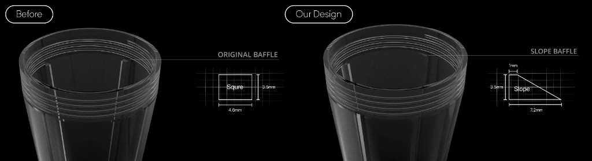
process
We redesigned the baffle shape based on its turbulence generation capability and energy consumption.
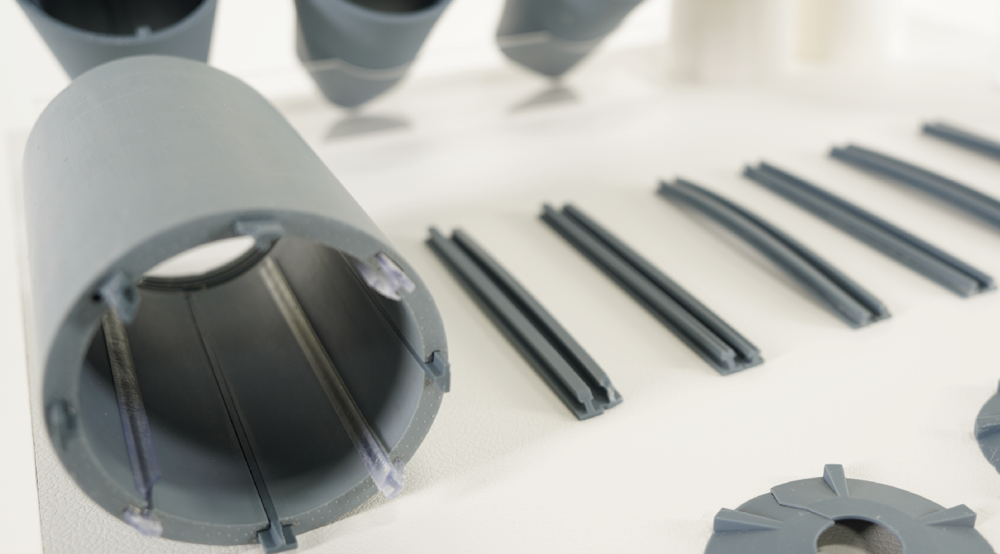
That is me!!!
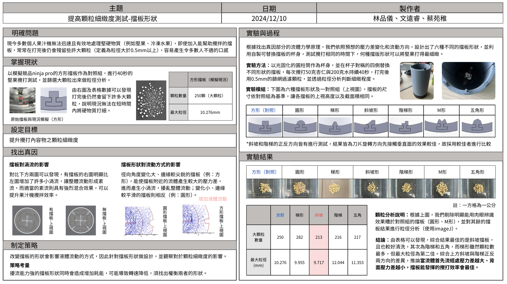
在這裡填寫第三張照片說明。
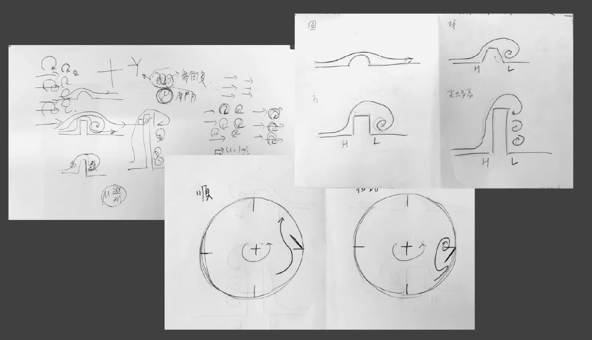
在這裡填寫第四張照片說明。
result
The sloped baffle demonstrated the best performance.
We inferred that the greater the pressure difference at the initial contact point of the fluid and the smaller the pressure difference on the backside, the more efficiently the baffle can enhance mixing.
Blade Base | Experiment 2
When there is no base baffle, the liquid mainly rotates stably in a horizontal direction. Once a base baffle
is added, vertical circulation increases significantly, allowing larger particles to be carried toward the
blade area more easily and greatly improving blending efficiency.
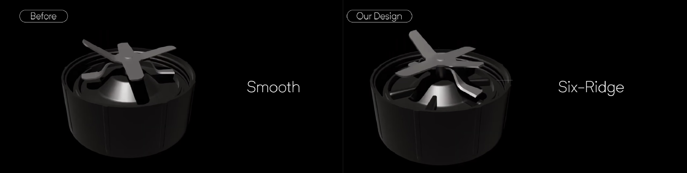
process
We redesigned the blade base using the baffle concept. In order to enhance turbulence and backflow as the
ingredients pass through.
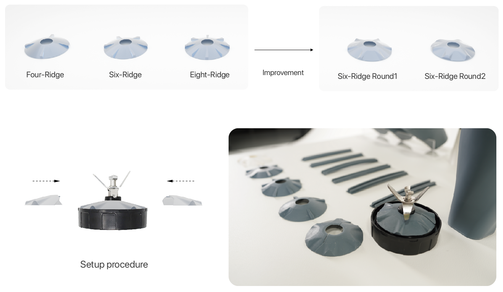
Before and our design.
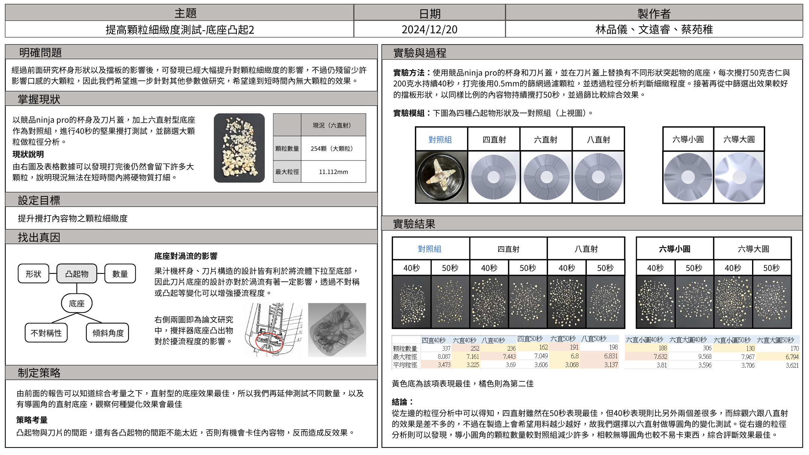
在這裡填寫第二張照片說明。
result
The Six-Ridge Round1 demonstrated the best performance.
Analyze using particle size analysis software.
Cup Shape | Experiment 3 - 1
Using the baffle concept, we redesigned the cup shape by changing the bottom to a square structure.
This makes it easier for the internal fluid to hit the cup walls, creating backflow and turbulence.
Cup Shape | Experiment 3 - 2
Although changing the cup body to a square base increases turbulence, it also results in higher energy
consumption. To balance turbulence and energy efficiency, we applied the concept of vortex flow to the
cup design. By adjusting the angles of the cup body, we created a vortex that pulls the fluid downward,
enhancing fluid circulation and improving blending efficiency.
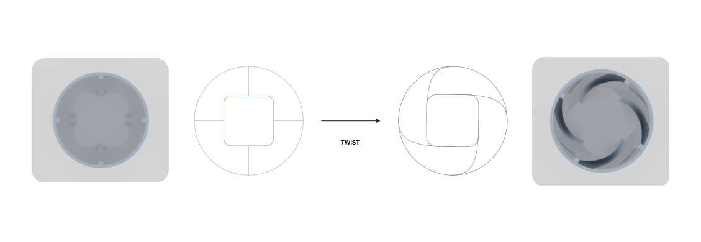
process
We first redesigned the cup bottom shape and then improved the cup body shape.
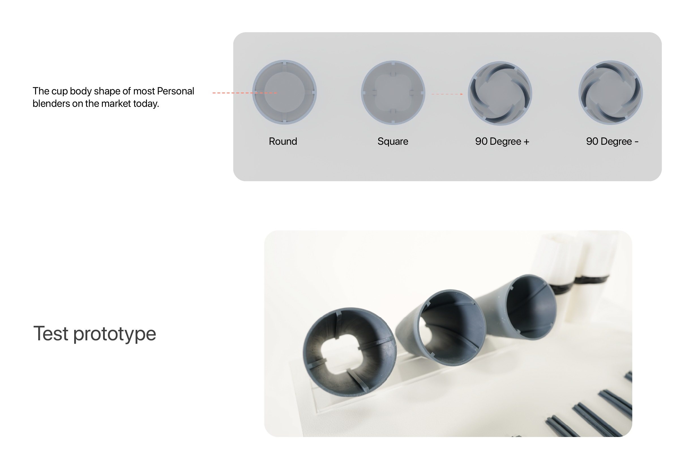
Before and our design.
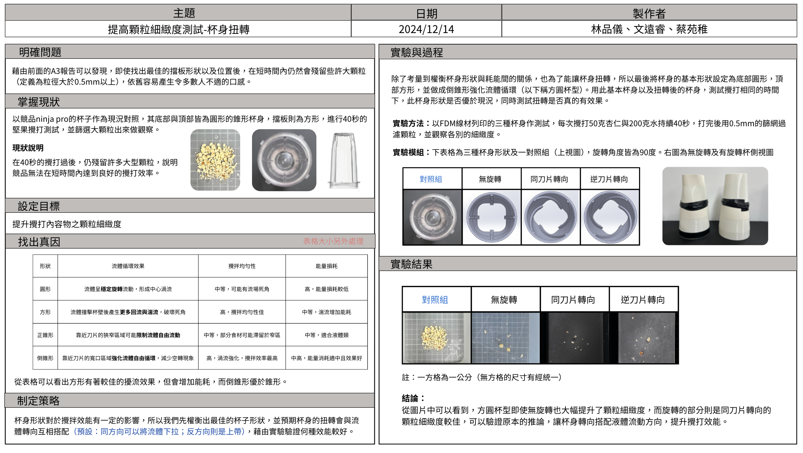
Design refinement comparison.
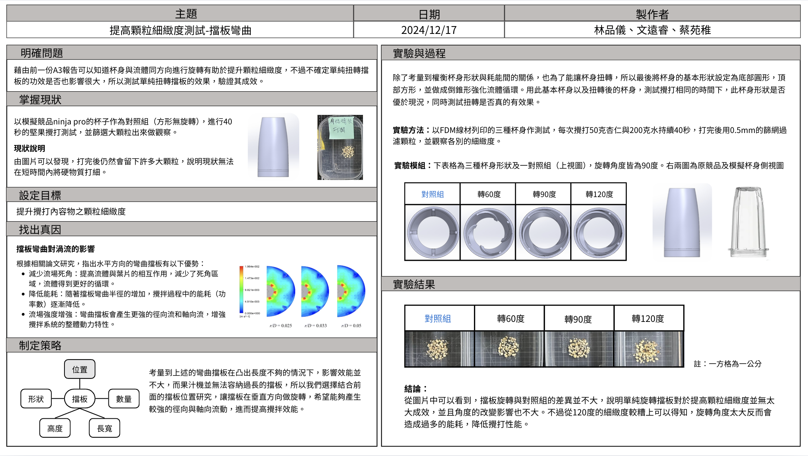
Setup procedure and validation.
result
The 90 Degree+ demonstrated the best performance.
design conclusion
By optimizing the design of the baffle shape, cup structure, and blade base, we significantly improved the
overall blending performance.
The enhanced personal blender can reduce large particle residue by approximately 80% in just 40 seconds,
outperforming comparable products on the market.